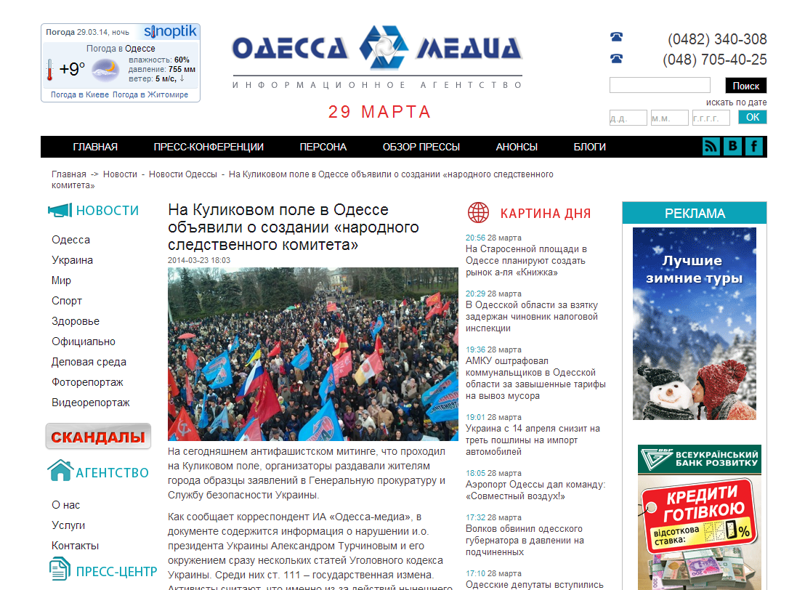
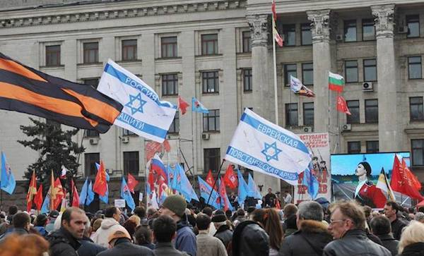
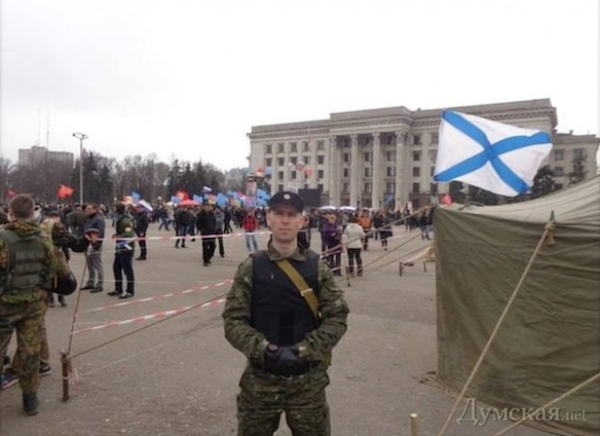
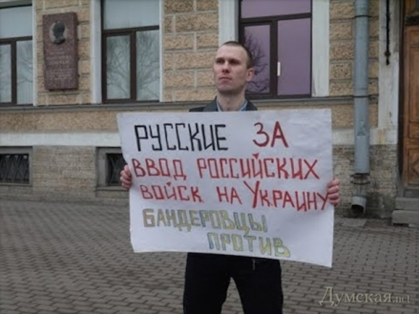
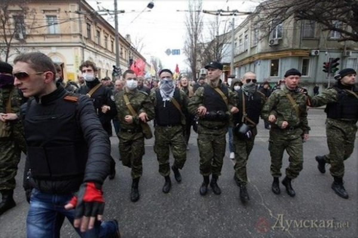
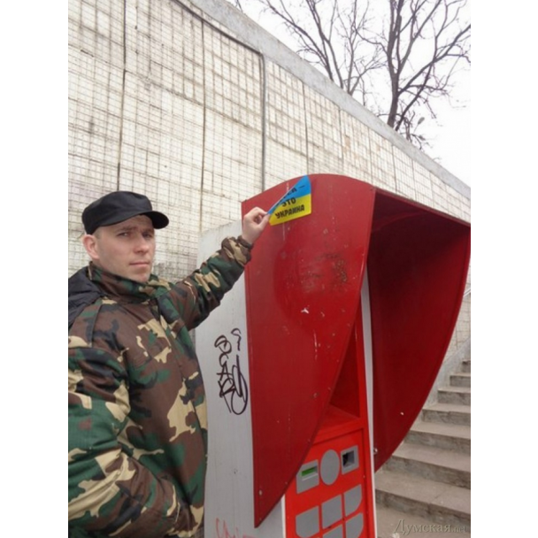
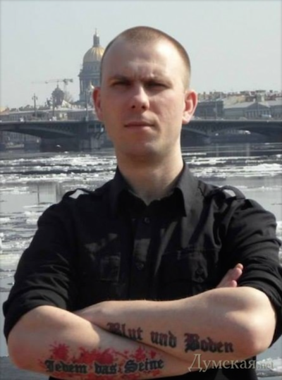
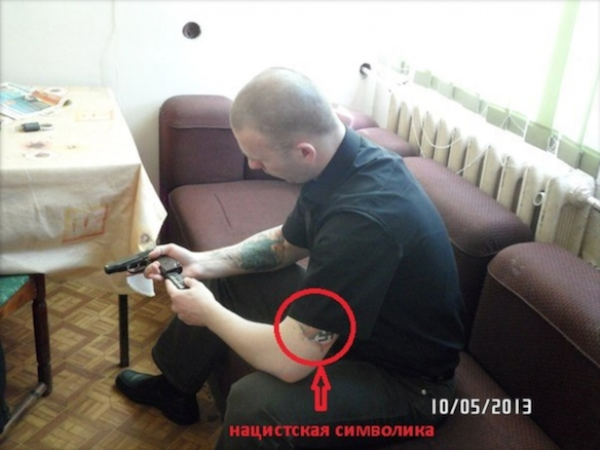

Участником одесского «антифашистского митинга» оказался петербуржский фашист
В СМИ (в частности в Dumskaya.net и Одесса Медиа) сообщалось о нескольких тысячах активистов, которые собрались 23 марта на Куликовом поле в Одессе — на митинг против «политических репрессий».
Как сообщает пользователь avmalgin, собравшиеся «скандировали «Россия» и «Свободу Антону Давидченко».Он утверждает, что использовалась еврейская символика — провокаторы от имени организации «Еврейская повстанческая армия» использовали израильские флаги c надписями «Россия, защити».По сообщению источника JewishNet в Одессе, при попытке активиста еврейской общины Одессы заговорить с провокаторами на иврите, единственным ответом было: «жид пархатый».
В СМИ подчеркивалось, что митинг — антифашистский.
Однако, одним з участников, призывающим к присоединению Одессы к РФ, оказался петербуржец Антон Раевский, поклонник свастики и Гитлера.
Антон является членом огранизации «Черная сотня».И, как видно из его канала на YouTube, организация копирует стилистику нацисткой Германии.Правда, как сообщил лидер «Черной сотни» Александр Штильмарк, Антон вышел из организации, пробыв в ней, якобы, недолго.Rupor.info сообщило, что в последнее время Раевский занимался в основном организацией панихид по семье последнего российского императора в Петропавловском соборе.
Антон имеет на руках татуировки с нацистскими лозунгами.
Напомним, что Jedem das Seine (в переводе — «каждому свое») — это надпись на воротах Бухенвальда, а Blut und Boden («кровь и почва») — основа нацистской расовой идеологии, рассматривающей взаимосвязь происхождения (крови) и родной земли (почвы).
Кроме того, у него есть татуировки с нацистской свастикой:
и портрет Гитлера — на левом предплечье есть
Штильмарк отметил, что «Черная сотня» не пропагандирует нацизм, а выступает за «монархию, империю и православие».
Как рассказал «Фонтанке» Штильмарк, Раевский действительно в Украине.С ним поехали еще двое петербуржцев.Всего на юге Украины сейчас около восьми представителей «Черной сотни».
Цель — «помощь и защита от Правого Сектора и Бандеровцев».
Posted On: 2014-03-28T21:00:00








Content Date: 2014-03-28
Download Date: 2021-07-16
Document ID: L0C04FA5K